Linux
4.Linux 的目录结构
1.基本介绍
在 Linux 世界里，一切皆文件。
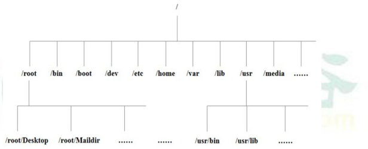
2.目录结构的具体介绍
具体的目录结构:
/bin
重点(/usr/bin、 /usr/local/bin)
- 是Binary的缩写，这个目录存放着最经常使用的命令
/sbin (/usr/sbin 、/usr/local/sbin)
- s就是Super User的意思，这里存放的是系统管理员使用的系统管理程序。
/home
重点
- 存放普通用户的主目录，在Linux中每个用户都有一个自己的目录，一般该目录名是以用户的账号命名的。
/root
重点
- 该目录为系统管理员，也称作超级权限者的用户主目录。
/boot
重点
- 存放的是启动Linux时使用的一些核心文件，包括一些连接文件以及镜像文件
/proc
- 这个目录是一个虚拟的目录，它是系统内存的映射，访间这个目录来获取系统信息。
/srv
- service缩写，该目录存放一些服务启动之后需要提取的数据。
/sys
- 这是linux2.6内核的一个很大的变化。该目录下安装了2.6内核中新出现的一个文件系统
/tmp
- 这个目录是用来存放一些临时文件的。
/dev
- 类似于wirkdows的设备管理器，把所有的硬件用文件的形式存储。
/media
重点
- linux系统会自动识别一些设备，例如u盘、光驱等等，当识别后，linux会把识别的设备挂载到这个目录下。
/mnt
重点
·系统提供该目录是为了让用户临时挂载别的文件系统的，我们可以将外部的存储挂载在/mnt/上，然后进入该目录就可以查看里的内容了。d:/myshare
/opt
- 这是给主机额外
安装软件所摆放的目录。如安装ORACLE数据库就可放到该目录下。
默认为空。
/usr/local
重点
- 这是别一个给主机额外安装软件所安装的目录。一般是通过编译源码方式安装的程序。
/var
重点
- 这个目录中存放着在不断扩充着的东西，习惯将经常被修改的目录放在这个目录下。包括各种日志文件。
/selinux [security-enhanced linux] 360
- SELinux是一种安全子系统,它能控制程序只能访问特定文件。
proc，srv，sys 不要动
3.Linux 目录总结一下
linux 的目录中有且只要一个根目录 /
linux 的各个目录存放的内容是规划好，不用乱放文件。
linux 是以文件的形式管理我们的设备，因此 linux 系统，一切皆为文件
linux 的各个文件目录下存放什么内容，大家必须有一个认识。
学习后，你脑海中应该有一颗 linux 目录树
5.远程登录 Linux 系统
1.Xshell 软件介绍
Xshell 是目前最好的远程登录到 Linux 操作的软件，流畅的速度并且完美解决了中文乱码的问题， 是目前程序员首选的软件。
XShel5 远程登录到 Linux 后，就可以使用指令来操作 Linux 系统
2.XFtp5 软件介绍
是一个基于 windows 平台的功能强大的 SFTP、FTP 文件传输软件。使用了 Xftp 以后，windows 用户能安全地在 UNIX/Linux 和 Windows PC 之间传输文件
1.如何解决 XFTP5 中文乱码的问题
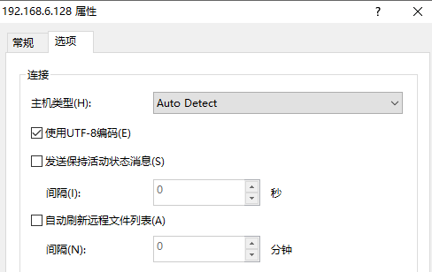
说明：如上图配置后，还需要刷新一下，就可以解决中文乱码
6.vi 和 vim 编辑器
6.1 vi 和 vim 的基本介绍
所有的 Linux 系统都会内建 vi 文本编辑器。
Vim 具有程序编辑的能力，可以看做是 vi 的增强版本，可以主动的以字体颜色辨别语法的正确性，方便程序的设计。
6.1 vi 和 vim 的三种常见模式
6.1.1 正常模式
在正常模式下，我们可以使用快捷键。
以 vim 打开一个档案就直接进入一般模式了(这是默认的模式)。在这个模式中， 你可以使用『上下左右』按键来移动光标，你可以使用『删除字符』或『删除整行』来处理档案内容， 也可以使用
『复制、贴上』来处理你的文件数据。
6.1.1 插入模式/编辑模式
在模式下，程序员可以输入内容。
按下 i, I, o, O, a, A, r, R 等任何一个字母之后才会进入编辑模式, 一般来说按 i 即可
6.1.1 命令行模式
在这个模式当中， 可以提供你相关指令，完成读取、存盘、替换、离开 vim 、显示行号等的动作则是在此模式中达成的！
6.1 vi 和 vim 三种模式的相互转化图
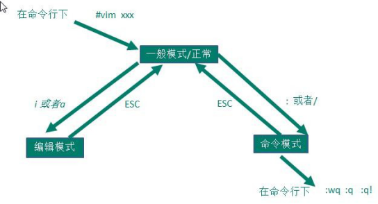
- :wq 保存退出、
- q 退出，没有更改文件的内容
- q! 强制退出，改变文件内容了，但是不保存退出
6.1 快捷键的使用案例
- 拷贝当前行 yy , 拷贝当前行向下的 5 行 5yy，并粘贴（p）。
- 删除当前行 dd , 删除当前行向下的 5 行 5dd
- 在文件中查找某个单词 [命令行下 /关键字 ， 回车 查找 , 输入 n 就是查找下一个 ],查询hello.
- N 查找上一个
- 设置文件的行号，取消文件的行号.[命令行下 : set nu 和 :set nonu]
- 使用快捷键到底文档的最末行[G]和最首行[gg],注意这些都是在正常模式下执行的。
- 在一个文件中输入 “hello” ,然后又撤销这个动作，在正常模式下输入 u
- 编辑 /etc/profile 文件，并将光标移动到 第 20 行 shift+g
- 第一步：显示行号 :set nu
- 第二步：输入 20 这个数
- 第三步: 输入 shift+g
7.开机、重启和用户登录注销
7.1 关机&重启命令
7.1.1 基本介绍
shutdown
- shutdown -h now : 表示立即关机
- shutdown -h 1 : 表示 1 分钟后关机
- shutdown -r now: 立即重启
halt ： 就是直接使用，效果等价于关机
reboot：就是重启系统。
syn ：把内存的数据同步到磁盘
==当我们关机或者重启时，都应该先执行以下 sync 指令，把内存的数据写入磁盘，防止数据丢失==
7.2 用户登录和注销
登录时尽量少用 root 帐号登录，因为它是系统管理员，最大的权限，避免操作失误。可以利用普通用户登录，登录后再用
su - 用户名命令来切换成系统管理员身份.在提示符下输入 logout 即可注销用户
8.用户管理
/home/ 目录下有各个创建的用户
8.1 添加用户
8.1.1 基本语法
useradd [选项] 用户名
当创建用户成功后，会自动的创建和用户同名的家目录
也可以通过 useradd -d 指定目录 新的用户名，给新创建的用户指定家目录
8.2 给用户指定或者修改密码
passwd 用户名
8.3 删除用户
userdel [选项] 用户名
- 删除用户 xm，但是要保留家目
userdel xm - 删除用户 xh 以及用户主目录
userdel -r xm
==在删除用户时，我们一般不会将家目录删除。==
8.4 查询用户信息
id 用户名
1 | [root@bogon home]# id wj |
8.5 切换用户
在操作 Linux 中，如果当前用户的权限不够，可以通过 su - 指令，切换到高权限用户，比如 root
- 切换用户 su - wj
- 再切换回来 exit
从权限高的用户切换到权限低的用户，不需要输入密码，反之需要。
当需要返回到原来用户时，使用 exit 指令
查看当前用户
1 | [root@bogon home]# whoami |
8.6 用户组
类似于角色，系统可以对有共性的多个用户进行统一的管理。
8.6.1增加租
groupadd 组名
8.6.2 删除租
groupdel 组 名
8.7 增加用户时直接加上组
useradd -g 用户组 用户名
1 | [root@localhost ~]# useradd -g wudang zwj |
8.8 修改用户的组
usermod -g 用户组 用户名
1 | [root@localhost ~]# groupadd shaolin |
8.9 /etc/passwd 文件
用户（user）的配置文件，记录用户的各种信息
1 | zwj:x:1001:1002::/home/zwj:/bin/bash |
8.10 /etc/shadow 文件
口令的配置文件
每行的含义：登录名:加密口令:最后一次修改时间:最小时间间隔:最大时间间隔:警告时间:不活动时间:失效时间:标志
8.11 /etc/group 文件
组(group)的配置文件，记录 Linux 包含的组的信息每行含义：组名:口令:组标识号:组内用户列表
9.实用指令
9.1 指定运行级别
运行级别说明：
0 ：关机
1 ：单用户【找回丢失密码】
2：多用户状态没有网络服务
3：多用户状态有网络服务
4：系统未使用保留给用户
5：图形界面
6：系统重启
常用运行级别是 3 和 5 ，要修改默认的运行级别可改文件/etc/inittab 的 id:5:initdefault:这一行中的数字
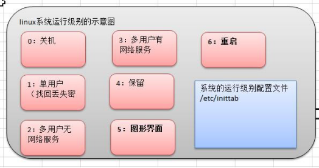
9.2 切换到指定运行级别的指令
init [012356]
如何找回 root 密码，如果我们不小心，忘记 root 密码，怎么找回。
思路： 进入到 单用户模式，然后修改 root 密码。因为进入单用户模式，root 不需要密码就可以登录。
开机->在引导时输入 回车键-> 看到一个界面输入 e -> 看到一个新的界面，选中第二行（编辑内核）在输入 e-> 在这行最后输入 1 ,再输入 回车键->再次输入 b ,这时就会进入到单用户模式。
这时，我们就进入到单用户模式，使用 passwd 指令来修改 root 密码。
9.3 帮助指令
当我们对某个指令不熟悉时，我们可以使用 Linux 提供的帮助指令来了解这个指令的使用方法。
9.3.1 man 获得帮助信息
man [命令或配置文件]（功能描述：获得帮助信息）
9.3.2 help 指令
9.4 文件目录类
1、pwd 指令
pwd (功能描述：显示当前工作目录的绝对路径)
2、ls 指令
ls [ 选 项] [目录或是文件]
-a ：显示当前目录所有的文件和目录，包括隐藏的
-l ：以列表的方式显示信息
3、 cd 指令
cd [参数] (功能描述：切换到指定目录)
cd ~ 或者 cd ：回到自己的家目录
cd .. 回到当前目录的上一级目录
案例 1：使用绝对路径切换到 root 目录
cd /root
4、mkdir 指令
mkdir 指令用于创建目录(make directory)
1 | mkdir [选项] 要创建的目录 |
常用选项
-p ：创建多级目录
1 | mkdir -p /home/animal/tiger |
5、rmdir 指令
rmdir 指令删除空目录
- rmdir [选项] 要删除的空目录
- rm -rf 要删除的目录（非空目录一起删除）
6、touch 指令
touch 指令创建空文件
1 | touch 文件名称 |
7、cp 指令[重要]
cp [选项] source dest
常用选项
-r ：递归复制整个文件夹
8、rm 指令
rm 指令移除【删除】文件或目录
- rm [选项] 要删除的文件或目录
- -r ：递归删除整个文件夹
- -f ： 强制删除不提示
9、mv 指令
mv [源文件] [目标文件] 移动文件与目录或重命名
mv oldNameFile newNameFile (功能描述：重命名)
mv /temp/movefile /targetFolder (功能描述：移动文件)
10、cat 指令
cat 查看文件内容，是以只读的方式打开。
- cat [选项] 要查看的文件
- -n ：显示行号
cat 只能浏览文件，而不能修改文件，为了浏览方便，一般会带上 管道命令 | more
cat 文件名 | more [分页浏览]
11、more 指令
more 指令是一个基于 VI 编辑器的文本过滤器，它以全屏幕的方式按页显示文本文件的内容。more 指令中内置了若干快捷键
more 要查看的文件
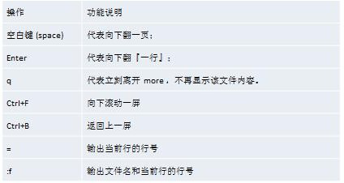
12 、less 指令
less 指令用来分屏查看文件内容，它的功能与 more 指令类似，但是比 more 指令更加强大，支持各种显示终端。less 指令在显示文件内容时，并不是一次将整个文件加载之后才显示，而是根据显示需要加载内容，对于显示大型文件具有较高的效率。
less 要查看的文件
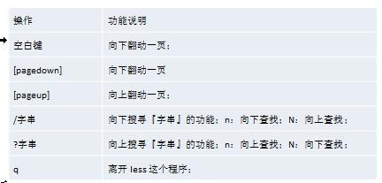
13、 > 指令 和 >> 指令
> 指 令 和 >> 指 令
> 输出重定向 : 会将原来的文件的内容覆盖
>> 追加： 不会覆盖原来文件的内容，而是追加到文件的尾部
14、echo 指令
echo [选项] [输出内容]
15、head 指令
head:用于显示文件的开头部分内容，默认情况下 head 指令显示文件的前 10 行内容
head 文件 (功能描述：查看文件头 10 行内容)
head -n 5 文件 (功能描述：查看文件头 5 行内容，5 可以是任意行数)
16、tail 指令
tail 用于输出文件中尾部的内容，默认情况下 tail 指令显示文件的后 10 行内容。
- tail 文件：功能描述：查看文件后 10 行内
- tail -n 5 文件：功能描述：查看文件后 5 行内容，5 可以是任意行数）
- tail -f 文件 ：功能描述：查询正在改变的日志文件
- Ctrl+S：暂停刷新
- Ctrl+Q：继续使用终端
- Ctrl+C/Ctrl+Z：退出tail命令
17、ln 指令
软链接也叫符号链接，类似于 windows 里的快捷方式，主要存放了链接其他文件的路径
- ln -s [原文件或目录] [软链接名] （功能描述：给原文件创建一个软链接）
18 、history 指令
查看已经执行过历史命令,也可以执行历史指令
9.5 时间日期类
9.5.1 date 指令-显示当前日期
date （功能描述：显示当前时间）
- date “+%Y 显示当前年份
1 | [wangjian@localhost ~]$ date |
9.5.2 date 指令-设置日期
date -s 字符串时间
案例 1: 设置系统当前时间 ， 比如设置成 2018-10-10 11:22:22
9.5.3 cal 指令
cal [选项] （功能描述：不加选项，显示本月日历）
9.6 搜索查找类
9.6.1 find 指令
find 指令将从指定目录向下递归地遍历其各个子目录，将满足条件的文件或者目录显示在终端。
- find [搜索范围] [选项]
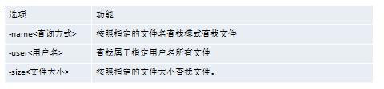
1 | [wangjian@localhost ~]$ find dog/ -name hello.txt |
9.6.2 locate 指令
locate 指令可以快速定位文件路径。locate 指令利用事先建立的系统中所有文件名称及路径的locate 数据库实现快速定位给定的文件。Locate 指令无需遍历整个文件系统，查询速度较快。为了保证查询结果的准确度，管理员必须定期更新 locate 时刻。
locate 搜索文件
==由于 locate 指令基于数据库进行查询，所以第一次运行前，必须使用 updatedb 指令创建 locate数据库。==
1 | [root@localhost ~]# updatedb |
9.6.3 grep 指令和 管道符号 |
grep 过滤查找 ， 管道符，“|”，表示将前一个命令的处理结果输出传递给后面的命令处理。
- grep [选项] 查找内容 源文件
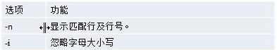
1 | [wangjian@localhost ~]$ cat java.java | grep -n out |
9.7 压缩和解压类
9.7.1 gzip/gunzip 指令
gzip 用于压缩文件， gunzip 用于解压的
- gzip 文件 （功能描述：压缩文件，只能将文件压缩为*.gz 文件）
- gunzip 文 件.gz （功能描述：解压缩文件命令）
1 | [wangjian@localhost ~]$ clear |
当我们使用 gzip 对文件进行压缩后，不会保留原来的文件。
9.7.2 zip/unzip 指令
zip 用于压缩文件， unzip 用于解压的，这个在项目打包发布中很有用的.
1 | - zip [选项] XXX.zip(目标文件) 将要压缩的内容（功能描述：压缩文件和目录的命令） |
• zip 常用选项
-r：递归压缩，即压缩目录
• unzip 的常用选项
-d<目录> ：指定解压后文件的存放目录
1 | [wangjian@localhost ~]$ zip -r wj.zip dog/ |
9.7.3 tar 指令
tar 指令 是打包指令，最后打包后的文件是 .tar.gz 的文件。
- tar [选项] XXX.tar.gz 打包的内容 (功能描述：打包目录，压缩后的文件格式.tar.gz)
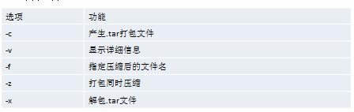
压缩
解压
10.组管理和权限管理
1 Linux 组基本介绍
在 linux 中的每个用户必须属于一个组，不能独立于组外。在 linux 中每个文件有所有者、所在组、其它组的概念。
2 文件/目录 所有者
一般为文件的创建者,谁创建了该文件，就自然的成为该文件的所有者
2.1 查看文件的所有者
指令：ls -ahl
2.2 修改文件所有者
指令：chown 用户名 文件名
1 | [root@localhost wangjian]# chown root wj.zip |
2.3 修改文件所在的组
chgrp 组名 文件名
1 | [root@localhost wangjian]# chgrp root wj.zip |
3 权限的基本介绍
ls -l
-rw-rw-r–. 1 wangjian wangjian 664 10月 26 10:26 a.txt
0-9 位说明
- 第 0 位确定文件类型(d, - , l , c , b)
- 第 1-3 位确定所有者（该文件的所有者）拥有该文件的权限。—User
- 第 4-6 位确定所属组（同用户组的）拥有该文件的权限，—Group
- 第 7-9 位确定其他用户拥有该文件的权限 —Other
4 rwx 权限详解
1.rwx 作用到文件
[ r ]代表可读(read): 可以读取,查看
[ w ]代表可写(write): 可以修改,但是不代表可以删除该文件,删除一个文件的前提条件是对该
文件所在的目录有写权限，才能删除该文件.
[ x ]代表可执行(execute):可以被执行
2 rwx 作用到目录
- [ r ]代表可读(read): 可以读取，ls 查看目录内容
- [ w ]代表可写(write): 可以修改,目录内创建+删除+重命名目录
- [ x ]代表可执行(execute):可以进入该目录
3 文件及目录权限实际案例
ls -l 中显示的内容如下：(记住)
-rwxrw-r– 1 root root 1213 Feb 2 09:39 abc
10 个字符确定不同用户能对文件干什么
- 第一个字符代表文件类型： 文件 (-),目录(d),链接(l)
- 其余字符每 3 个一组(rwx) 读(r) 写(w) 执行(x)
- 第一组 rwx : 文件拥有者的权限是读、写和执行
- 第二组 rw- : 与文件拥有者同一组的用户的权限是读、写但不能执行
- 第三组 r– : 不与文件拥有者同组的其他用户的权限是读不能写和执行
可用数字表示为: r=4,w=2,x=1 因此 rwx=4+2+1=7
5 修改权限-chmod
chmod [选项] 指令，可以修改文件或者目录的权限
6 修改文件所有者-chown
1 | chown newowner file ：改变文件的所有者 |
-R 如果是目录 则使其下所有子文件或目录递归生效
1 | chown -R root dog/ |
7 修改文件所在组-chgrp
1 | chgrp newgroup file ：改变文件的所有组 |
-R 如果是目录 则使其下所有子文件或目录递归生效
1 | chgrp -R newgroup file ：改变文件的所有组 |
11.crond 任务调度
任务调度：是指系统在某个时间执行的特定的命令或程序。
任务调度分类：
1.系统工作：有些重要的工作必须周而复始地执行。如病毒扫描等.
2.个别用户工作：个别用户可能希望执行某些程序，比如对 mysql 数据库的备份.
1.基本语法
crontab [选项]
- -e 编辑crontab定时任务
- -l 查询vrontab任务
- -r 删除当前用户所有的crontab任务
2.参数细节说明
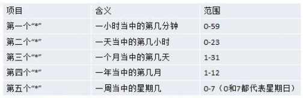
案例
12.Linux 磁盘分区、挂载
12.1.1 查询系统整体磁盘使用情况
基本语法
df -h
12.1.2 查询指定目录的磁盘占用情况
du -h /目录
查询指定目录的磁盘占用情况，默认为当前目录
-s 指定目录占用大小汇总
-h 带计量单位
-a 含文件
–max-depth=1 子目录深度
-c 列出明细的同时，增加汇总值
13.网络配置
1 | 以太网适配器 VMware Network Adapter VMnet8: |
第二种方法(指定固定的 ip)
直 接 修 改 配 置 文 件 来 指 定 IP, 并 可 以 连 接 到 外 网 ( 程 序 员 推 荐 ) ， 编 辑
/etc/sysconfig/network-scripts/ifcfg-eth0
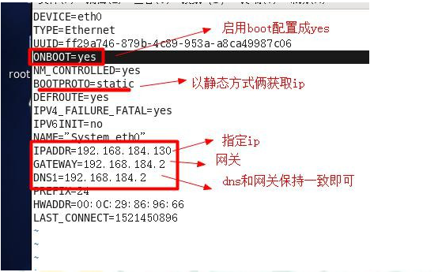
修改后，一定要 重启服务
service network restart
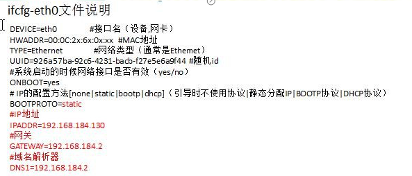
14.进程管理
1、显示系统执行的进程
查看进行使用的指令是 ps ,一般来说使用的参数是 ps -aux
ps -aux | grep sshd
- -e 显示运行在系统上的所有进程
- -f 扩展显示输出
- -a 显示当前终端的所有进程信息
- -u 以用户的格式显示进程信息
- -x 显示后台进程运行的参数
2、终止进程 kill 和killall
若是某个进程执行一半需要停止时，或是已消了很大的系统资源时，此时可以考虑停止该进程。
使用 kill 命令来完成此项任务。
2 基本语法：
kill [选项] 进程号（功能描述：通过进程号杀死进程）
killall 进程名称（功能描述：通过进程名称杀死进程，也支持通配符，这在系统因负载过大而变得很慢时很有用）
15.实操篇 RPM 和 YU
1、rpm 包的管理
一种用于互联网下载包的打包及安装工具，它包含在某些 Linux 分发版中。它生成具有.RPM扩展名的文件。RPM 是 RedHat Package Manager（RedHat 软件包管理工具）的缩写，类似windows 的 setup.exe，这一文件格式名称虽然打上了 RedHat 的标志，但理念是通用的。
Linux 的分发版本都有采用（suse,redhat, centos 等等），可以算是公认的行业标准了。
rpm 包的其它查询指令：
1 | rpm -qa :查询所安装的所有 rpm 软件 |
查询软件安装的信息
1 | rpm -qi|grep firefox |
查询 rpm 的安装了那个地方
1 | rpm -ql firefox |
这个文件属于哪个 rpm 包
1 | rpm -qf firefox |
包rpm -qa | more [分页显示]
卸载 rpm 包：
1 | rpm -e RPM 包的名称 |
安装 rpm 包：
1 | rpm -ivh RPM 包全路径名称 |
- i=install 安 装
- v=verbose 提 示
- h=hash 进度条
2 yum
Yum 是一个 Shell 前端软件包管理器。基于 RPM 包管理，能够从指定的服务器自动下载 RPM包并且安装，可以自动处理依赖性关系，并且一次安装所有依赖的软件包。使用 yum 的前提是可以联网
查询 yum 服务器是否有需要安装的软件
1 | yum list|grep xx 软件列表 |
安装指定的 yum 包
1 | yum install xxx 下载安装 |
16 搭建JavaEE 环境
执行jar 包
1 | $ nohup java -jar test.jar >temp.txt & |
 wechat
wechat alipay
alipay